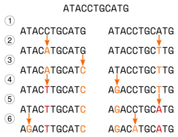

Modele ewolucji molekularnej
Do czego służą modele ewolucji molekularnej?
Jeśli chcemy rozwikłać pokrewieństwa ewolucyjne między badanymi organizmami, co jest zasadniczym celem badań filogenetycznym, powinniśmy dysponować jakąś metodą oceny odległości ewolucyjnych między nimi. Organizmy o mniejszej odległości będą uważane za bliżej spokrewnione między sobą niż taksony bardziej od siebie oddalone. Najprostszym sposobem, który przychodzi do głowy jest proste porównanie sekwencji i wyliczenie w ilu miejscach się one różnią - im więcej różnic tym większa odległość ewolucyjna. Tak obliczoną odległość możemy określić jako p i wyrazić ją w procentach lub w proporcji, wtedy mieszczą się w wartościach między 0 a 1. Na przykład jeśli dwie sekwencje o długości 100 miejsc będą się różnić w 17 miejscach, to p=17% lub p=0,17. Takie podejście co prawda pozwala ocenić różnice między sekwencjami ale niekoniecznie odzwierciedla rzeczywiste odległości ewolucyjne, zwłaszcza jeśli porównywane są sekwencje z dużą liczbą różnic. Niekoniecznie jest to intuicyjnie oczywiste ale wynika to ze sposobu w jaki zmieniają się nici DNA w czasie.
Rozważmy hipotetyczną ewolucję dwu sekwencji, przedstawioną na poniższym rysunku:

Początkowo wygląda ona tak ATACCTGCATG.
(1) - Dochodzi do specjacji, powstają dwa gatunki, sekwencje są na początku identyczne, ale dalej ewoluują niezależnie od siebie
(2) - W obu sekwencjach dochodzi do mutacji (C->A, A-T).
(3) - W lewej sekwencji ostatni nukleotyd mutuje (G->C).
(4) - W lewej sekwencji piąty nukleotyd, który już wcześniej mutował, ponownie zmienia się (A->T), w prawej sekwencji w drugiej pozycji także dochodzi do substytucji (T->G).
(5) - W prawej sekwencji doszło do substytucji (T->A).
(6) - W obu sekwencjach dochodzi do substytucji (T->G, C->A), zauważ, że w lewej mutacji doszło do zmiany analogicznej do tej, która wydarzyła się w sekwencji prawej w kroku 4.
W sumie w obu sekwencjach doszło do ośmiu substytucji. Dopasujmy teraz obie sekwencje do siebie:
Jak widać mutacje są widoczne w czterech pozycjach i sześciu nukleotydach z czego dwa mutowały dwukrotnie. Zaznaczmy teraz miejsca gdzie widoczne są różnice:
Okazuje się, że sekwencje różnią się tylko w dwu miejscach, mimo że w sumie wydarzyło się w nich osiem mutacji. Powyższy przykład pokazuje mechanizm ,,ukrywania się'' mutacji. Porównując dwie sekwencje, jeśli widzimy różnicę między nukleotydami w danym miejscu, nie jesteśmy w stanie stwierdzić, czy jest ona wynikiem jednej czy wielu mutacji. Co więcej, następujące po sobie mutacje mogą najpierw sprawić, że nukleotydy będą się różnić a później, że będą takie same (choć niekoniecznie takie jak na początku). Im więcej czasu upływa i im więcej zachodzi mutacji w badanych sekwencjach, tym większy odsetek zmian zostaje ,,zatarty''. O ile możemy przyjąć, że liczba mutacji w czasie rośnie w sposób liniowy, to liczba obserwowanych różnic rośnie liniowo tylko na początku (dla małej liczby różnic) a później coraz wolniej, ponieważ coraz więcej zmian wydarza się w tych samych miejscach. Liczba różnic zmienia się, dla sekwencji o równych proporcjach rodzajów nukleotydów, do wartości 3/4 liczby nukleotydów, przy czym zmierza do tej granicy coraz wolniej. Trzeba też pamiętać o tym, że zasady prawdopodobieństwa wskazują, że dla dwu losowo wybranych sekwencji DNA o tej samej długości 1/4 miejsc powinna być zgodna.
[TODO: zrobić symulację mutacji i różnic między sekwencjami]
Jak widać, prosta metoda obliczania różnic między sekwencjami jest zawodna. Konieczne zatem okazało się stworzenie modeli, które w bardziej realistyczny sposób pozwalałyby oszacować odległości ewolucyjne. Poniżej znajduje się opis kilku, najpopularniejszych o różnym stopniu skomplikowania.
Model Junkes-Cantor (JC, JC69)
Najprostszy model, nazwany od nazwisk autorów modelem Junkesa-Cantora (w skrócie JC, lub JC69 uwzględniając rok publikacji: 1969) oparty jest na założeniu, że nukleotydy mogą ulegać podmianie każdy z każdym z takim samym prawdopodobieństwem. Można to przedstawić za pomocą macierzy:
| T | C | A | G | |
| T | $$ - $$ | $$ \alpha $$ | $$ \alpha $$ | $$ \alpha $$ |
| C | $$ \alpha $$ | $$ - $$ | $$ \alpha $$ | $$ \alpha $$ |
| A | $$ \alpha $$ | $$ \alpha $$ | $$ - $$ | $$ \alpha $$ |
| G | $$ \alpha $$ | $$ \alpha $$ | $$ \alpha $$ | $$ - $$ |
Wartość $$ \alpha $$ oznacza prawdopodobieństwo zmiany jednego nukleotydu w drugi w określonej jednostce czasu na przykład na rok. Wynika z tego, że prawdopodobieństwo zmiany danego nukleotydu w jakikolwiek inny nukleotyd w danym okresie czasu wynosi:
$$ r=3\alpha $$
Z kolei odległość między dwoma sekwencjami po czasie $$ t $$ będzie wynosić:
$$ d=3\alpha t$$
Wartości, tu oznaczone znakiem -, na przekątnych wynoszą ujemną sumę wartości w rzędach. W powyższym przypadku będzie to $$-3\alpha$$ a np. dla modelu
K80 (poniżej) jest to $$ -\alpha -2\beta $$ itd.